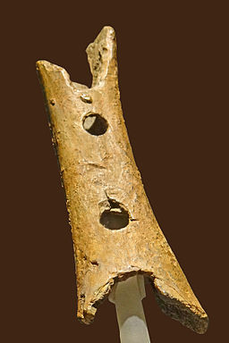
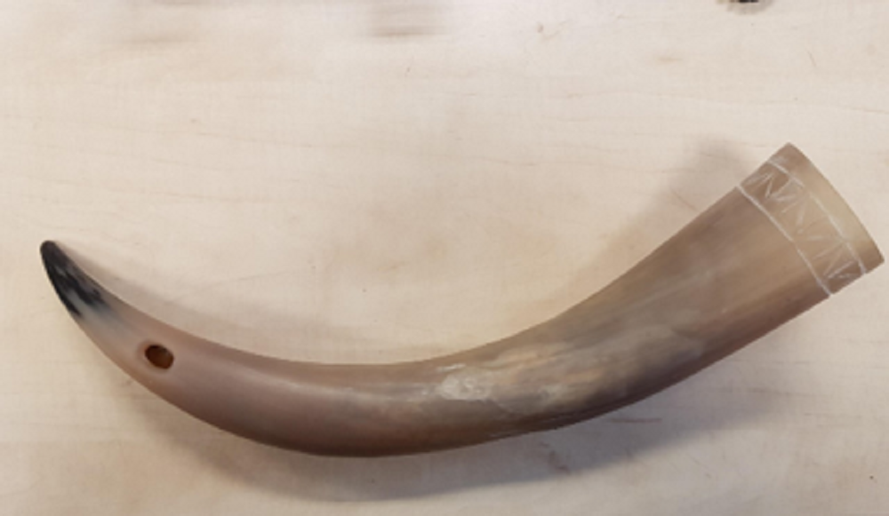

Als we in de historie duiken van de geschiedenis van muziek zijn er eigenlijk weinig bronnen te vinden die echt kunnen aangeven waar muziek vandaan komt en waar het begonnen is. Volgens wetensschappelijk onderzoek van diverse musicologen is er wel een theorie ontstaan die de muziek tot vroegere tijden kan opsporen. Archeologische bronnen hebben aangewezen dat in de tweede helft van de laatste ijstijd (in de periode van 50.000 en 10.000 voor Chr.) de eerste tekenen van muziek kunnen worden gevonden in de vorm van grottekeningen en kleine voorwerpen. Er zijn een aantal oude muziekinstrumenten gevonden die gemaakt waren van de natuurlijke materialen die deze mensen in deze tijd voor handen hadden, zoals fluiten van voetkootjes en fluiten met toongaatjes om meerdere klanken te creëren. Maar ook werden er in deze tijd fluiten gemaakt van holle beenderen. Wetenschappers denken dat deze fluiten meestal werden gebruikt voor rituelen en signalen afgeven naar stammen om hen heen. Voor het signalen geven werden ook hoorns van wilde dieren gebruikt.
 